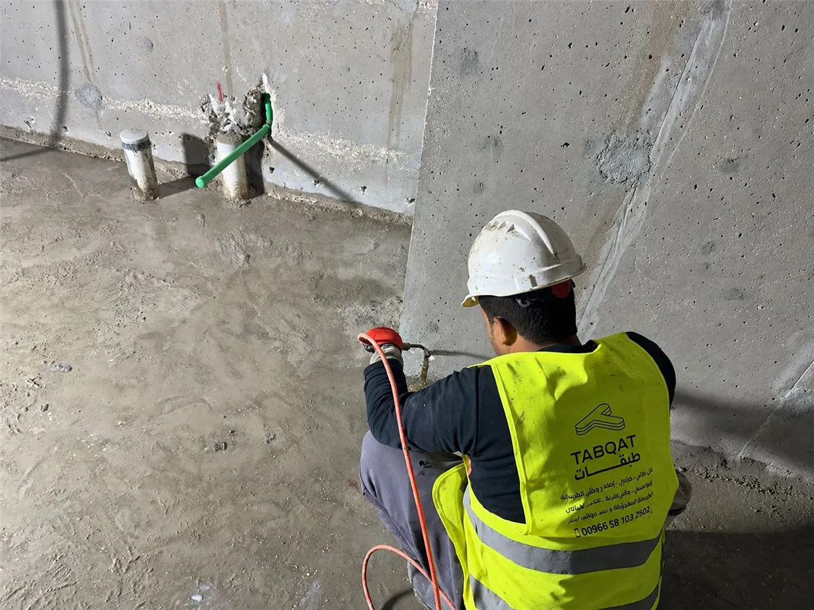
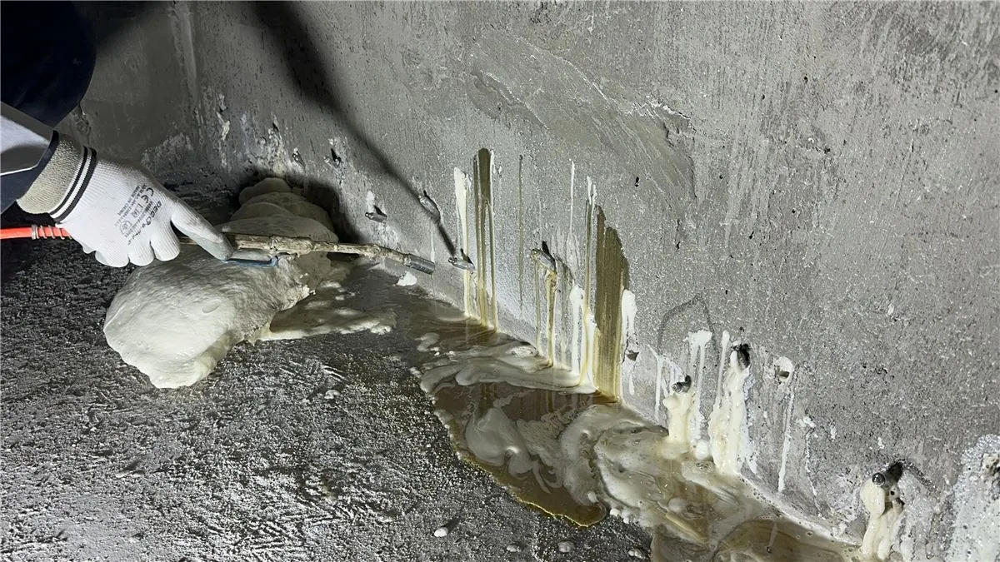
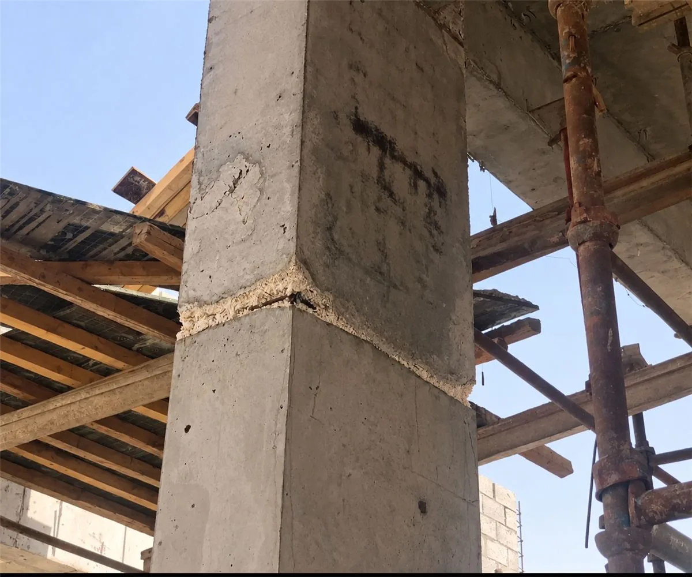
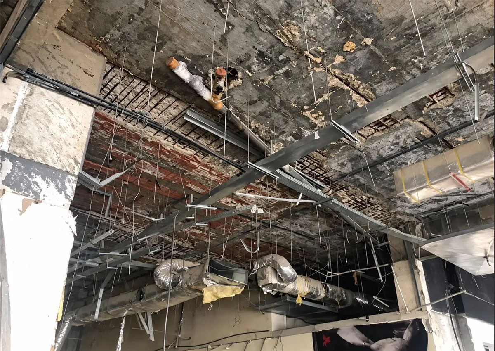
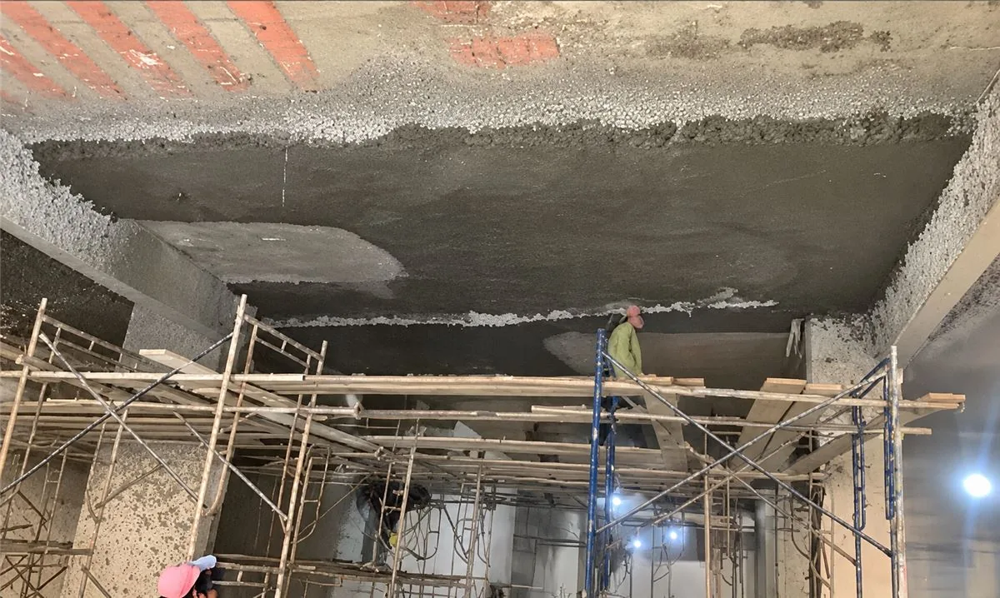

متى يكون الشرخ في الخرسانة خطيرا؟
ليس كل شرخ خطيرا. الشروخ الشعرية في طبقة اللياسة غالبا سطحية ولا تمس العنصر الخرساني، أما الشروخ التي تظهر في الأعمدة أو الكمرات أو البلاطات، أو يزيد عرضها مع الوقت، أو يصاحبها تسرب مياه أو صدأ في حديد التسليح، فتحتاج معاينة فنية لتحديد سببها قبل اختيار طريقة العلاج.
علامات تستدعي المعاينة:
- شرخ مائل أو أفقي في عمود أو كمرة خرسانية.
- شرخ يزيد طوله أو عرضه مع الوقت.
- صدأ أو انكشاف في حديد التسليح حول الشرخ.
- تسرب مياه أو رشح مستمر من الشرخ.
- تشققات في الجدران مع صعوبة في فتح الأبواب أو الشبابيك أو هبوط في الأرضيات.
لاحظت إحدى هذه العلامات؟ أرسل صورة الشرخ لنحدد خطورته.
أرسل صورة الشرخحلول حقن وإصلاح الخرسانة
نحدد طريقة اصلاح الخرسانة حسب نوع الضرر وحالة العنصر الخرساني، من حقن الشروخ الخرسانية وإيقاف تسربات المياه، إلى ترميم الخرسانة المتضررة.

حقن الشروخ الخرسانية بالإيبوكسي
نستخدم حقن الإيبوكسي لملء الشروخ الخرسانية وربط جانبيها في الحالات المناسبة، بعد تقييم سبب الشرخ وحركته وظروف الرطوبة. ولأن المادة تدخل تحت ضغط إلى عمق الشرخ، لا تقتصر معالجة الشروخ الخرسانية على إغلاق سطحها.
الحالات التي يعالجها: شروخ خرسانية مستقرة ومناسبة للحقن وفق التقييم الفني.
أماكن التنفيذ: شروخ الأعمدة الخرسانية، شروخ الكمرات، شروخ السقف والبلاطات، الجدران الخرسانية.
أرسل صورة الشرخ لنحدد نوع الحقن
حقن تسربات المياه بالبولي يوريثان
نوقف تسرب المياه عبر الشروخ والفواصل الخرسانية بحقن البولي يوريثان، باختيار نظام الحقن المناسب لطبيعة التسرب وظروف الموقع.
أماكن التنفيذ: الأقبية، الخزانات الخرسانية، الجدران المعرضة للمياه.
أرسل صورة التسرب
ترميم التعشيش والتقشر
نرمم التعشيش والتقشر في الأعمدة والأسقف والجدران بإزالة الخرسانة الضعيفة ومعالجة حديد التسليح المكشوف، ثم الترميم بمواد إصلاح مناسبة للحالة. ولمعرفة أسباب التعشيش ودرجاته وطريقة علاجه بالتفصيل، راجع صفحة معالجة التعشيش في الخرسانة.
أرسل صورة التعشيشحقن الإيبوكسي أم البولي يوريثان: أيهما يناسب حالتك؟
| نقطة المقارنة | حقن الإيبوكسي | حقن البولي يوريثان |
|---|---|---|
| الغرض الأساسي | ملء الشروخ وربط جانبيها | إحكام الشروخ والفواصل التي تتسرب منها المياه |
| الحالة المناسبة | شروخ مستقرة بعد تقييم سببها | تسربات نشطة عبر الشروخ والفواصل |
| المرونة بعد التصلب | صلب، لا يناسب الشروخ المتحركة | تتوفر أنظمة مرنة تستوعب حركة محدودة |
| ظروف الرطوبة | يعتمد على مواصفات المنتج | مصمم للتعامل مع الرطوبة والمياه |
| الاختيار السريع | شرخ ثابت بدون مياه | شرخ أو فاصل يسرب مياه |
يحدد فريق شركة الطبقات المتعددة النظام المناسب بعد معاينة الحالة، وقد تحتاج بعض الحالات إلى النظامين معا.
مشاريع حقن وإصلاح الخرسانة قبل وبعد
ترميم الأسقف الخرسانية والكمرات
المشكلة: تلف وتقشر في الغطاء الخرساني مع انكشاف حديد التسليح.
المعالجة: ترميم المناطق المتضررة ومعالجة الحديد وإعادة تغطية الأجزاء المكشوفة من السقف والكمرات.


عندك مشكلة مشابهة؟
أرسل صورهاخطوات حقن وإصلاح الخرسانة من المعاينة إلى التسليم
- المعاينة والتقييم: نعاين العنصر المتضرر ونحدد نوع المشكلة وسببها وحجمها.
- اختيار النظام المناسب: نحدد طريقة الإصلاح أو نوع الحقن والمواد حسب الحالة.
- التنفيذ والتحقق والتسليم: ننفذ المعالجة ونتحقق من النتيجة قبل التسليم.
تختلف تكلفة حقن وإصلاح الخرسانة ومدة التنفيذ حسب حجم التلف، وطول الشروخ وعمقها، ووجود تسرب مياه، وسهولة الوصول إلى العنصر. نحدد عرض السعر والمدة المتوقعة بعد المعاينة مباشرة.
أرسل صور المشكلة لتحديد موعد المعاينةلماذا تختار شركة الطبقات المتعددة؟
الأسئلة الشائعة عن حقن وإصلاح الخرسانة
ما هو حقن الخرسانة؟
حقن الخرسانة طريقة إصلاح تضخ فيها مواد مثل الإيبوكسي أو البولي يوريثان تحت ضغط داخل الشروخ والفراغات الخرسانية، لملئها وربط أجزائها أو إيقاف تسرب المياه منها، دون تكسير العنصر الخرساني أو إعادة صبه.
هل كل شرخ خرساني يمكن علاجه بالحقن؟
لا. الحقن يناسب الشروخ المستقرة والشروخ التي تتسرب منها المياه، أما الشروخ الناتجة عن هبوط أو أحمال زائدة فتحتاج تقييما إنشائيا وقد تتطلب تدعيما قبل الحقن.
هل يحتاج إصلاح الخرسانة إلى تكسير أو إخلاء المبنى؟
لا في أغلب الحالات. حقن الشروخ يتم عبر نقاط حقن على مسار الشرخ، ومعالجة التعشيش تقتصر على إزالة الأجزاء الضعيفة من المنطقة المتضررة، لذلك تنفذ معظم الأعمال أثناء استخدام المبنى، ويحدد فريق المعاينة أي احتياطات لازمة.
ما الفرق بين إصلاح الخرسانة والتدعيم الإنشائي؟
إصلاح الخرسانة يعيد العنصر المتضرر إلى حالته السليمة، أما تدعيم المنشآت الخرسانية فيرفع قدرة العنصر على تحمل الأحمال عندما لا تكفي قدرته الأصلية.
ما الذي يحدد تكلفة حقن الشروخ ومدة التنفيذ؟
تحددها مساحة التلف، وطول الشروخ وعمقها، ووجود تسرب مياه، وسهولة الوصول إلى العنصر. ونقدم عرض السعر والمدة بعد المعاينة.
هل يمكن أن يعود الشرخ بعد المعالجة، وهل يوجد ضمان؟
قد يعود إذا عولج دون معالجة سببه، مثل الحركة المستمرة أو مصدر المياه، لذلك نبدأ بتحديد السبب ونختار مادة الحقن المناسبة. ونقدم ضمانا مكتوبا حتى 10 سنوات حسب نوع الخدمة، ويوضح نطاقه وشروطه في عرض السعر.
أرسل صور مشكلة الخرسانة واحصل على تقييم
صور التعشيش أو الشرخ أو التسرب وأرسلها لنا على واتساب، وسيحدد فريق شركة الطبقات المتعددة نوع المشكلة والمعالجة المناسبة وموعد المعاينة. ونغطي جميع أحياء الرياض.